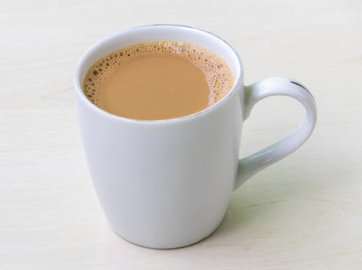
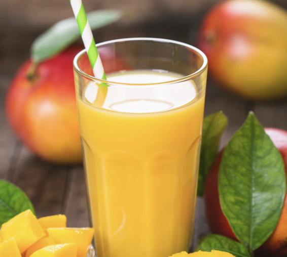
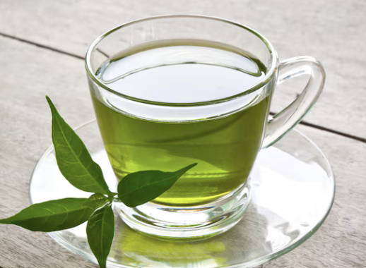
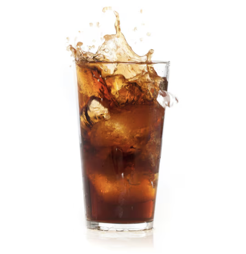

Ranking My Favorite Drinks
I made this list to rank some of the drinks I enjoy the most. I drink most of these when I study, relax, or hang out with friends.
| Tier | Drink | Type | Sweetness | Image | Comments |
|---|---|---|---|---|---|
| S | Milk Tea | Cold | Medium |  | My top drink. Smooth and balanced flavor, not too sweet. |
| A | Cold Coffee | Cold | Low | Helps me stay awake when I’m doing homework or coding. | |
| B | Mango Juice | Cold | High |  | Very refreshing but a little too sugary for me. |
| C | Green Tea | Hot | Low |  | Healthy and relaxing, but not my favorite taste. |
| D | Soda | Cold | High |  | I drink soda rarely because it has a lot of sugar. |
Reflection
In this project I learned how to build a table and style it with CSS. I also learned how captions and accessibility tags make a page easier to read. It was fun to add my own pictures and try different colors. I checked my files in the W3C validator to make sure they had no errors. This lab really helped me understand how tables and forms work together in HTML.